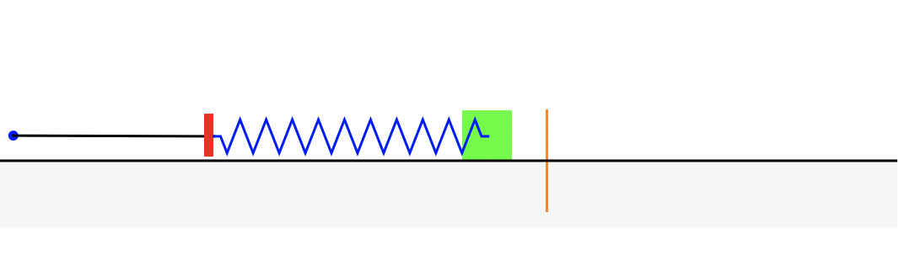

!pip install git+https://github.com/CU-Denver-MathStats-OER/ODEs
from IPython.display import clear_output
clear_output()2.5: Mass Spring Systems

A second order linear differential equation has the form
\[\color{dodgerblue}{P(t)\frac{d^2y}{dt^2}+Q(t)\frac{dy}{dt}+R(t)y=G(t)}\]
where \(P\), \(Q\), \(R\), and \(G\) are continuous functions of the independent variable (\(t\)). There are many applications for which this type of differential equation is a useful model.
Resonance in Sight and Sound
Resonance is a phenomenon that occurs when the frequencies of two objects (such as the period of sound waves, planetary orbits, or bouncing springs) are in sync with one another that results in an increase in the amplitude of the oscillations. Below are some examples of both beautiful and catastrophic consequences of resonance.
Saturn’s Rings

Saturn’s rings are mostly made of many (a big understatement!) tiny, nearly pure (99.9%) water ice particles. The inner-most ring starts about 4,000 miles above Saturn, and the rings extend out to 50,000 miles. The Cassini division is the biggest gap in the rings at 3,000 miles wide, and it is the result of resonance in the orbital frequencies between ice particles in the ring and the moon Mimas.
Mimas orbits Saturn every \(22.5\) hours. At one point, (long long ago) there were particles in the ring that orbited every \(11.25\) hours. Every two orbits, those particles felt a big pull in the same direction due to the gravity of Mimas. As a result, those ice particles were pulled further out towards Mimas. The particles eventually slowed down as they were pulled further from Saturn, breaking the resonance with Mimas and resettling into a new orbit. Thus, we have the Cassini division!
The Cassini division is a result of a 2:1 ratio with Mimas. Other gaps are the result of other rations (such as 3:1 and 3:2) and other moons. Below is a mesmerizing video with an audio translation of the harmonizing of the resonance between Saturn’s co-orbital moons Janus and Epimetheus and nearby ice particles.
Video: SATURN Sounds Part 2: Resonance of Janus translated into music by SYSTEM Sounds, uploaded August 23, 2017.
Breaking a Glass with your Voice
Resonance results when the frequency of a musical note matches the natural vibration of a crystal glass. The glass will vibrate with increasing amplitude until it shatters. The following is one model for understanding resonance.
\[\frac{d^2x}{dt^2}+k^2x=\cos(kt)\]
Video: “Boy Breaks Wine Glass with Voice.” YouTube, uploaded by chasechocolate, uploaded December 14, 2009.
Collapsing Suspension Bridge
The Tacoma Narrows Bridge in Washington State was one of the largest suspended bridges built at the time. The bridge connecting the Tacoma Narrows channel collapsed in a dramatic way on Thursday November 7, 1940. Winds of 35-46 miles/hours produced an oscillation which eventually broke the construction. The bridge began first to vibrate torsionally, giving it a twisting motion. Later the vibrations entered a natural resonance with the suspension bridge.
Video: “The Collapse of ’Galloping Gertie.” YouTube, uploaded by Smithsonian National Air and Space Museum, uploaded November 4, 2019.
Importing mass_spring Functions
You will only need to run the code cells below one time while this session remains active. However, if your session is terminated, you will need to re-run both code cells again in order to use damped_harmonic_oscillator() and/or damped_harmonic_oscillator_comp().
- Run the first code cell to load the module
mass_spring.pyfrom GitHub.- The will take just a couple of seconds to complete running.
- Run the second code cell to import the
damped_harmonic_oscillator()anddamped_harmonic_oscillator_comp()functions.
from utils.mass_spring import damped_harmonic_oscillator
from utils.mass_spring import damped_harmonic_oscillator_compRevisiting Unforced Mass-Spring Systems
Recall the mass-spring oscillator introduced in Worksheet 10 Homogeneous 2nd Order. We connect an object with mass \(m\) kg to a spring with stiffness coefficient \(k\) kg/sec\(^2\) that is connected to a stationary wall on the other end. We give the mass some initial position \(s_0\) and velocity \(v_0\), and we observe the mechanics of how the mass moves along a surface with friction coefficient \(b\) kg/sec. Such a system is called a mass-spring oscillator or a harmonic oscillator. The position of the mass at time, \(y(t)\), is modeled by the second order differential equation
\[\large {\color{mediumseagreen}{m}}y''+ {\color{tomato}{b}} y'+ {\color{dodgerblue}{k}} y=0; \qquad y(0)=s_0, \quad y'(0)=v_0.\]

Units of the Coefficients
For these questions we will measure quantities using the metric system:
- The overall force is measured in newtons, \(N\).
- It is equal to the force that would give a mass of one kilogram an acceleration of one meter per \(\mbox{sec}^2\),
- The spring constant \(k\) has units of force per unit of distance. For example newtons per meter, N/m.
- The damping constant is a unit of impulse per unit of distance. For example newton seconds per meter, \(\mbox{N} \cdot \mbox{s}\) per meter.
Over, Under, and Critically Damped
If there is no friction (\(\mathbf{b=0}\)), then the system is undamped.
If there is a little bit of friction, the mass will oscillate and move to the other side of its equilibrium before settling back at its equilibrium position in the long run. Such a system is called underdamped.
If there is a lot of friction, the mass will simply settle back at the equilibrium position (without moving to the other side of the equilibrium). Such a system is called overdamped.
When the system has just the perfect amount of friction such that:
- If there is less friction, the mass is underdamped, and
- If there is more friction, the mass is overdamped.
- We say the system is critically damped.
Question 1:
Consider a mass-spring system with a mass \(m=2\) kg, spring constant \(k=3\) newtons per meter, and damping constant \(b\) newton seconds per meter. For what values of \(b\) will the mass-spring oscillator be underdamped? overdamped? critically damped?
Solution to Question 1:
Question 2:
Use the damped_harmonic_oscillator() function in the mass_spring module to experiment and confirm your answers in [Question 1].
- Be sure you have already imported
damped_harmonic_oscillator()from themass_springmodule. See Importing Functions for code cells to perform this task. - See the Appendix for a quick set of instructions for using
damped_harmonic_oscillator(). - See Mass-Spring-Tutorial.ipynb for more detailed instructions.
Solution to Question 2
Edit and run the code cell below.
damped_harmonic_oscillator(m=??, # mass
b=??, # friction
k=??, # stiffness
A=??, # amplitude of forcing
omega=??, # frequency coefficient
x0=[??,??]) # [s0, v0], initial position and velocityQuestion 3
Summarize the relation between damping of the mass-spring oscillator, the roots of the underlying characteristic equation, and formulas of the solutions.
Solution to Question 3
Question 4
You place an object whose mass \(m\) (in kg) is unknown on top of a spring in a vacuum (ignoring all other forces such as friction and gravity) and put the system in motion. You observed the mass bounce up and down. Let \(y\) denote the vertical distance of the mass from its equilibrium position, with \(y>0\) when the mass is stretched above the equilibrium.
If external forces such as friction and gravity are absent, then the location of the mass \(y\) follows the same model for the undamped free mass-spring system: \[ my''+ky=0\].
Question 4a
If the spring constant of the spring is \(k=4 \mbox{ N/m}\), then give a solution to the initial value problem. Note your answer will depend on the mass \(m\).
Solution to Question 4a
Question 4b
If the mass bounces with a frequency of \(0.8\) cycles per second, then give the value of the mass \(m\). Note that one cycle means the mass goes from equilibrium, down, then back up, and returns to equilibrium.
Solution to Question 4b
Question 5
A \(5000\) kg railcar hits a spring bumper at a speed of \(1\) meter per second, and the spring compresses by \(0.1\) m. Assume no damping.
Question 5a
Find the value of the spring constant \(k\).
Solution to Question 5a
Question 5b
How far does the spring compress when a \(10,\!000\) kg railcar hits the spring at the same speed?
Solution to Question 5b
Question 5c
If the spring would break if it compresses more than \(0.3\) m, what is the maximum mass of a railcar that can hit at 1 m/s?
Solution to Question 5c
Question 5d
What is the maximum mass of a railcar that can hit the spring without breaking it at a speed of 2 m/s.
Solution to Question 5d
Forced Oscillations
Thus far, we have been considering the dynamics of a mass-spring systems free of external forces. Now we consider what happens if we add an external driving force.
- The spring has one end attached to the mass and the other end is now attached to a spinning wheel.
- The wheel acts externally, as a forcing function we denote \(F_{\rm Ext}(t)\).
- The mass-spring system is now modeled by a nonhomogeneous equation
\[ mx'' + by' + ky = F_{\rm Ext}(t).\]
- If the wheel has fixed radius and velocity, the forcing function is a trigonometric function of the form \(F_{\rm Ext}(t)= A \cos{(\omega t)}\).
Question 6
Find an external forcing function of the form \(F(t) = A\cos{(\omega t)}\) that will have resonance with the undamped (\(b=0\)) mass-spring system with \(m=2\) kg and spring coefficient \(k=3\) N/m. Then test your answer using the damped_harmonic_oscillator function provided in the code cell below.
Solution to Question 6
damped_harmonic_oscillator(m=??, # mass
b=??, # friction
k=??, # stiffness
A=??, # amplitude of forcing
omega=??, # frequency coefficient
x0=[??,??]) # [s0, v0], initial position and velocityQuestion 7
A water tower in an earthquake acts as a mass-spring system. Assume the the container on top is full and the water does not move around. The container is the mass, and the support is the spring. The container with the water has a mass of \(10,\!000\) kg. It takes a force of 1000 newtons to displace the container 1 meter. For simplicity, we assume no friction. The earthquake induces an external force given by \(F(t)=m\omega^2\cos{(\omega t)}\) where \(\omega\) denotes the frequency (number of cycles per second). When the earthquake hits, the water tower is at rest.
Question 7a
What is the natural frequency of the water tower? This means, if there is no external force (homogeneous), what is the frequency of the homogeneous solution?
Solution to Question 7a
Question 7b
If the water tower moves more than \(1.5\) meters from its equilibrium resting position, the tower will collapse. Suppose an earthquake with a frequency of \(0.5\) cycles per second hits, will the water tower collapse or remain standing? Provide supporting work, graphs, and/or explanations to support your answer.
Solution to Question 7b
Appendix: Quick Start for mass-spring Functions
In order to use either damped_harmonic_oscillator or damped_harmonic_oscillator_comp, we first need to import the functions from mass_spring module. See Importing Functions for code cells to perform this task.
- See Mass-Spring-Tutorial.ipynb for more detailed instructions.
Testing One System with damped_harmonic_oscillator
Recall the damped harmonic oscillator has the following model
\[my''+by'+ky=f(t); \ \ y(0)=s_0 \ \ y'(0)=v_0.\]
The forcing function has a fixed period and amplitude, for example \(f(t) = A \sin{(\omega t)}\).
- Note the animation may take several seconds to complete running.
- Set
A=0for an unforced system.
damped_harmonic_oscillator(m=2, # mass
b=0, # friction
k=3, # stiffness
A=0, # amplitude of forcing
omega=1, # frequency coefficient
x0=[1,0]) # [s0, v0], initial position and velocitySide-by-Side Comparison with damped_harmonic_comp
The function damped_harmonic_comp() will simultaneously run to animations for two different mass-spring systems. The function works similar to works similarly to damped_harmonic(). For each coefficient, enter an array of two values, one for each of the two systems.
damped_harmonic_oscillator_comp(m=[0.2, 0.3], # masses
b=[0.5, 0.1], # frictions
k=[1, 2], # stiffnesses
A=[0, 0], # amplitudes of forcing
omega=[1, 1], # frequency coefficients
x0=[[0.5, 1], [-0.5, -1]], # [ [initial cond 1], [initial cond 2] ]
fps=4, # frames per second, to speed up or slow down
tf=40) # total time, to extend or shorten clipCreative Commons License Information

Exploring Differential Equations by Adam Spiegler is licensed under a Creative Commons Attribution-NonCommercial-ShareAlike 4.0 International License. Python scripts in mass_spring.py created by Troy Butler, Jonathon Hirschi, and Adam Spiegler.
Based on a work at https://github.com/CU-Denver-MathStats-OER/ODEs and original content created by Rasmussen, C., Keene, K. A., Dunmyre, J., & Fortune, N. (2018). Inquiry oriented differential equations: Course materials. Available at https://iode.sdsu.edu.